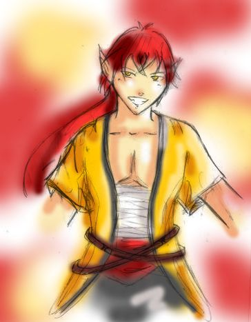
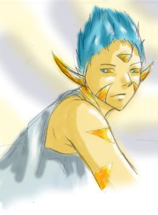
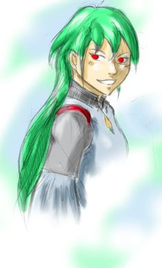
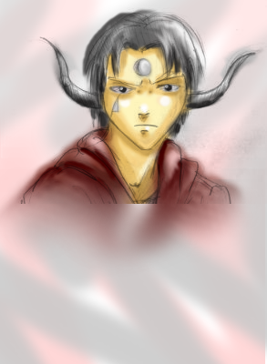
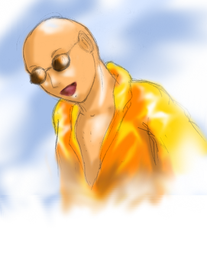
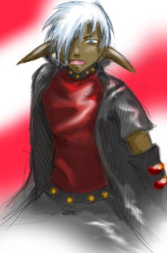
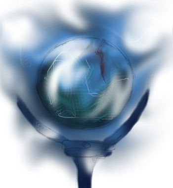
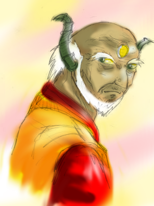
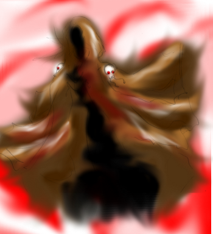

Nom: Inaki Wilt
Race: Demi-Elfe argenté
Rang: Aspirant mage
Spécialité: magie du feu
Age: 17 (volume 1) / 22 (volume 2)
Origine: Royaume de Nobat
Wilt Inaki a été abandonné peu après sa naissance près de la frontière de Zart vers le village de Kero. Il a été adopté par un vieux couple d'humain. Kero se situe près du mur séparant le Royaume de Nobat et Zart. Encouragé par ses parents adoptifs qui sacrifièrent toutes leurs économies pour ses études, il est admis dans diverses écoles de la ville de Nobat. Il intègre par la suite la prestigieuse Ecole d'Art et de Magie de Nobat. Ses parents disparaissent dans un tragique accident durant sa 1ère année. Inaki en est extrêmes affecté, cependant, pour honorer ses parents il décide de poursuivre ses études et coûte que coûte de devenir un mage.
Tout se déroula avec succès jusqu'à sa dernière année (3ème année). Lors de la cérémonie du destin, l'Orbe tomba devant lui et se fissura. N'ayant été nommé chez aucun mage pour valider ses études, il fut le premier à redoubler pour raison "inconnue". L'année suivante, il rencontre Abmérico Zaro qui est en seconde année et devient son ami. Lors de sa seconde cérémonie, l'orbe sacré ne lui prédit rien, pas un son ne se fit entendre. Il redoubla donc encore une fois pour raison "inconnue". Dans sa nouvelle classe, il connaît déjà Zaro et se lie d'amitié avec la plupart des membres de sa classe. Ceux-ci le taquinent souvent au sujet de ses échecs ...
Inaki est le héro du tome I.

Nom: Abmérico Zaro
Race: Dragon Doré
Rang: Aspirant
Magie: Eclair
Age: 16
Origine: Arcan
Zaro descend d'une grande lignée de dragon. Pour perpétuer la tradition et honorer sa famille, il doit devenir un mage reconnu et puissant.

Nom: Ylline
Race: Demi-démon
Rang: Inconnu
Magie: Inconnue
Age: 27 (volume 1) / 32 (volume 2)
Pour la plupart de ceux qui la connaisse, Ylline s'occupe des affaires du Grand-Maître Noltz et lui prête main forte. Les gens n'en savent pas plus sur elle.
Elevée à Zart, c'est à la base une humaine. Ses parents ont été tués par des démons mais elle fut sauvée de justesse par le mystérieux démon nommé Noltz. Celui-ci lui donna une partie de son sang pour la sauver et éleva Ylline comme sa propre fille.

Nom: Arc Nola
Race: Dragon Gris (ou argenté)
Rang: Grand-Maître mage
Magie: Magie du vent, magie des éclairs
Age: 23 (volume 1) / 27 (volume 2)
Origine: Bao Lumina
Le Grand-Maître Arc, siège au conseil des Haut fonctionnaires de Bao Lumina. C'est un homme extrêmement admiré et très influent. La disparition de son frère, tué par le démon Noltz l'a énormément affecté. Depuis il est intransigeant et est un fervent défenseur de la justice; en aucun cas il tolère la traitrise.

Nom: Fallou Lairy
Race: Humain
Rang: Grand-Maître mage
Magie: Magie de la lumière, magie du vent
Age: 46 (volume 1) / 51 (volume 2)
Fallou reçu son titre de mage à l'âge de 23 ans. Son accession dans la hiérarchie fut fulgurante, en seulement trois années il accéda au titre de Grand-Maître mage.
A l'âge de 32 ans, il fut nommé à la tête de l'école d'Art et de Magie du Royaume de Nobat, la plus connue et prestigieuse École des pays civilisés.

Nom: Leoon Akoni
Race: Elfe noir
Rang: Grand-Maître mage
Magie: Magie de l'ombre, magie de la terre
Age: 28 (volume 1) / 33 (volume 2)
Dans toute l'histoire de l’École d'Art et de Magie de Nobat, Akoni fut le plus jeune étudiant à être diplômé. A 11 ans il reçoit le titre de Mage. A peine 2 années plus tard, il devient Grand-Maître Mage.
Akoni a un caractère très joyeux et charmeur. Par contre il a tendance à casser les pieds de son entourage par des bavardages et des plaisanteries incessants.
Il est le personnage principal du Volume II.

Nom: Globus Cruciger
Magie: Divination, Téléportation, Magie de la lumière
Selon les rumeurs l'orbe sacré fut créé lors de la guerre Sombre de manière à prédire les événements futurs et facilité la victoire des Royaumes du Nort contre Zart. Longtemps considéré comme "perdu" il fut mystérieusement retrouvé par le jeune mage Fallou il y a 27 ans.
De nombreuse années plus tard, Fallou accéda au rang de Grand-Maître et devint directeur de la prestigieuse Ecole d'Art et de Magie de Nobat. Il décida alors de rendre l'existence de l'Orbe publique et de l'utliser pour prédire vers quels experts mages les élèves iront valider leur formation.
Le passé de l'Orbe ainsi que ses véritables motivations restent un grand mystère...

Nom: Milo Bao
Race: Dragon d'émeraude
Rang: Grand-Maître Mage
Magie: Magie de l'ombre, magie aérienne, magie de la lumière
Age: inconnu
Bao est à la tête du Royaume de Bao Lumina créé par ses ancêtres. Il a le titre de Grand-Maître Mage, cependant, par respect des traditions drageonnes, il est appelé plus communément Éminent Bao.
Il veille à la prospérité et au bien-être du Royaume, et cela, quelques soit les moyens qu'ils doit utiliser.
Contrairement à la plupart des dragons établit hors d'Arcan depuis plusieurs génération, il n'a pas perdu sa capacité à retrouver sa forme originelle de dragon.

Nom: Noltz
Race: Démon
Rang: Grand-Maître mage
Magie:
Magie du feu, Invocation, magie de l'ombre, etc
Age: inconnu
Origine: Zart
Noltz a la réputation d'un sanguinaire démon dans les pays civilisés. Ayant participé, il y a plus de 200 ans, à la Guerre sombre, il devrait être mort depuis longtemps. Cependant, les rumeurs le prétendent vivant et toujours aussi terrifiant.
Dans les histoires pour les enfants, c'est le grand méchant Noltz qui viendra les punir s'ils ne sont pas sages!